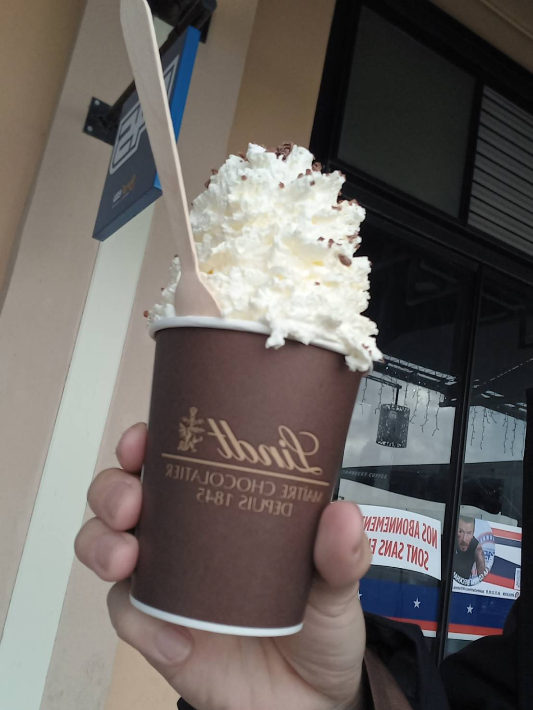
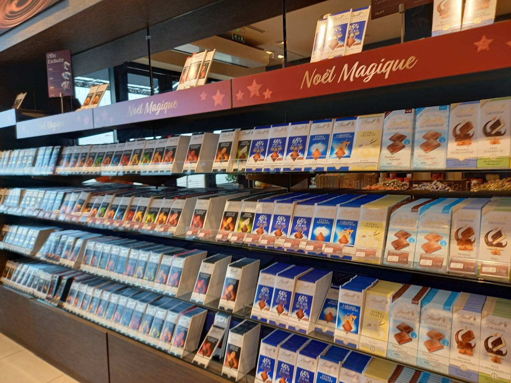

チョコレートの年間消費量1位がスイスとは驚きですよね⁇
年間10Kgということは・・・スイカ2玉分のチョコレートを食べていらっしゃるΣ(ﾟДﾟ)
さすがヨーロッパ！チョコレート好きなんですね🍫
今日はリンツチョコレートについての紹介
チョコレートには4大発明があります。そのうちの2つがスイスなのです。
以下に詳細を説明いたします。
・1875年 スイスでミルクチョコレートが誕生（byダニエル・ぺーター）
・1879年 スイスでなめらかチョコレートの製法を発明（byリンツ）
そうです！あのリンツチョコレートが大活躍なのです！！！
問題:日本でのチョコレートの年間消費量はどのくらいでしょうか？
答えはここに表示
チョコレート検定とは:チョコレートの主原料であるカカオの生態や製造法、チョコレートを取り巻くストーリーをまとめたテストです!